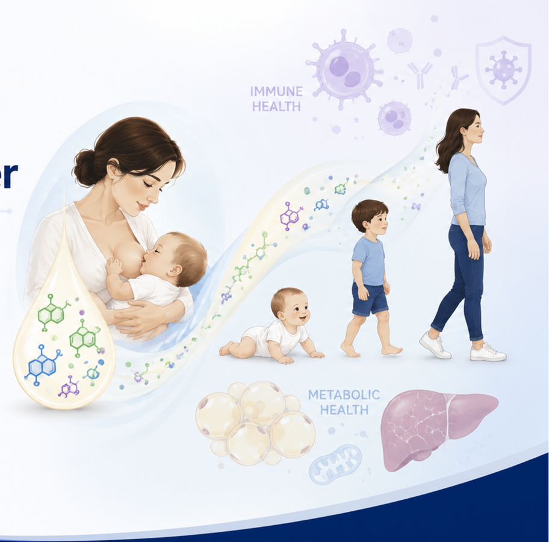

◉
Neonatal Immunity
How maternal signals and the early microbiome shape antiviral defenses in early life.
Learn more →
How maternal signals and the early microbiome shape antiviral defenses in early life.
Learn more →How milk-borne bile acids act as developmental signals that influence immunity, growth, and metabolism.
Learn more →How early-life exposures influence tissue development and lifelong metabolic health.
Learn more →Drop in a publication, grant, trainee award, seminar, or other announcement.
This section is intentionally easy to replace with your own content.
Use the News page for the full archive.